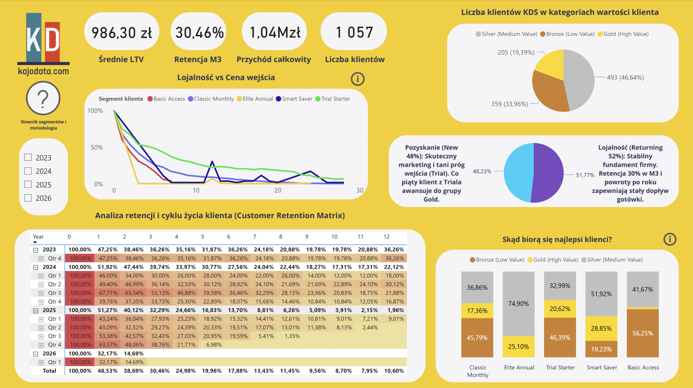

Case Study: Strategia Cenowa vs. Retencja w KajoDataSpace

Stack technologiczny:
WITH ranked_transactions AS ( SELECT customer AS customer_id, t_date AS transaction_date, amount, -- Sequence of purchases ROW_NUMBER() OVER(PARTITION BY customer ORDER BY t_date ASC, amount DESC) AS trans_rank, MIN(t_date) OVER(PARTITION BY customer) AS first_transaction_date, SUM(amount) OVER(PARTITION BY customer) AS total_customer_spend FROM kds_transactions_cleaned ) SELECT customer_id, -- Cohort & Month Index Logic DATE_TRUNC('month', first_transaction_date)::DATE AS cohort_month, (EXTRACT(YEAR FROM AGE(DATE_TRUNC('month', transaction_date)::DATE, DATE_TRUNC('month', first_transaction_date)::DATE)) * 12 + EXTRACT(MONTH FROM AGE(DATE_TRUNC('month', transaction_date)::DATE, DATE_TRUNC('month', first_transaction_date)::DATE)))::INT AS month_number, -- 1. PRICE SEGMENTATION (Transaction Level) CASE WHEN amount >= 890 THEN 'Elite Annual' WHEN amount IN (199, 169, 99, 249, 89, 179, 198, 219) THEN 'Classic Monthly' WHEN amount < 89 OR (amount < 169 AND (amount % 10 != 0 OR amount::TEXT LIKE '%.%')) THEN 'Trial Starter' WHEN amount >= 250 AND amount < 890 THEN 'Smart Saver' ELSE 'Basic Access' END AS price_segment, -- 2. ENTRY SEGMENT (Cohort Freezing) FIRST_VALUE( CASE WHEN amount >= 890 THEN 'Elite Annual' WHEN amount IN (199, 169, 99, 249, 89, 179, 198, 219) THEN 'Classic Monthly' WHEN amount < 89 OR (amount < 169 AND (amount % 10 != 0 OR amount::TEXT LIKE '%.%')) THEN 'Trial Starter' WHEN amount >= 250 AND amount < 890 THEN 'Smart Saver' ELSE 'Basic Access' END ) OVER(PARTITION BY customer_id ORDER BY transaction_date ASC) AS entry_segment, -- 3. CUSTOMER TIER (LTV Segmentation) CASE WHEN total_customer_spend > 1500 THEN 'Gold (High Value)' WHEN total_customer_spend BETWEEN 500 AND 1500 THEN 'Silver (Medium Value)' ELSE 'Bronze (Low Value)' END AS customer_tier FROM ranked_transactions;
Logika Segmentacji:
Cohort Freezing (FIRST_VALUE):

Podziękowania: